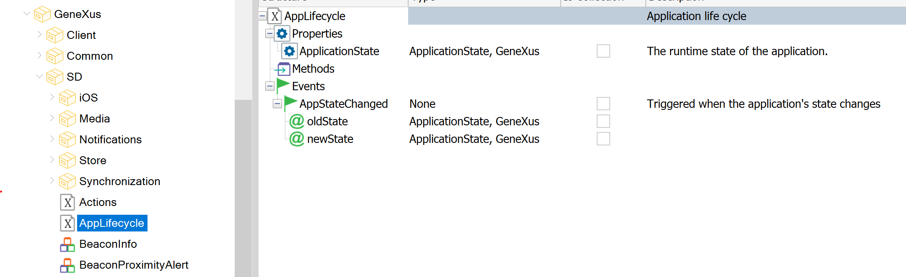

Sometimes the application needs to perform some actions when its execution state changes. For example, when the application starts, when it goes to background or when it comes back to foreground again. This external object allows asking for the application's execution state, and to code an event to manage state changes.  DomainsApplicationState domainThis domain is defined in order to identify the application execution state.
PropertiesApplicationStateIt is a read-only property automatically set to the application current execution state. EventsAppStateChanged eventNotifies when the application's execution state changes.
ExampleIf you need to execute something when the application is starting
Event AppLifecycle.AppStateChanged(&old, &new)
Composite
if &old = ApplicationState.NotRunning
// your code
endif
EndComposite
EndEvent
If you need to execute something when the application is going to background
Event AppLifecycle.AppStateChanged(&old, &new)
Composite
if &new = ApplicationState.Background
// your code
endif
EndComposite
EndEvent
Scope
AvailabilityThis external object is available as of GeneXus 16 Upgrade 2. |